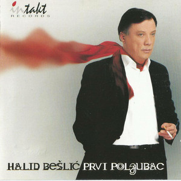

Halid Bešlić
Halid Bešlić is a renowned singer from Bosnia and Herzegovina.
Known for his powerful voice and emotional performances, Bešlić has captivated audiences for decades.
His music often reflects themes of love, heartache, and the beauty of his homeland.
With numerous hit songs and albums to his name, Halid Bešlić remains a beloved figure in the Balkans music scene.
Born on November 20, 1953, in Drinovci, Bosnia and Herzegovina, Halid Bešlić rose to prominence as one of the most prominent singers in the Balkans. His career spans several decades, marked by countless hits and memorable performances that have earned him a dedicated fan base across the region. Bešlić's music is characterized by its emotional depth, powerful vocals, and evocative lyrics, which often explore themes of love, longing, and the human experience. His songs resonate deeply with audiences, reflecting the rich cultural heritage and traditions of Bosnia and Herzegovina. Despite his enduring success, Bešlić remains humble and grounded, maintaining a strong connection to his roots and community. Through his music, Halid Bešlić continues to inspire and touch the hearts of listeners worldwide.
Halid Bešlić LP
Color Changer
This is some sample text.